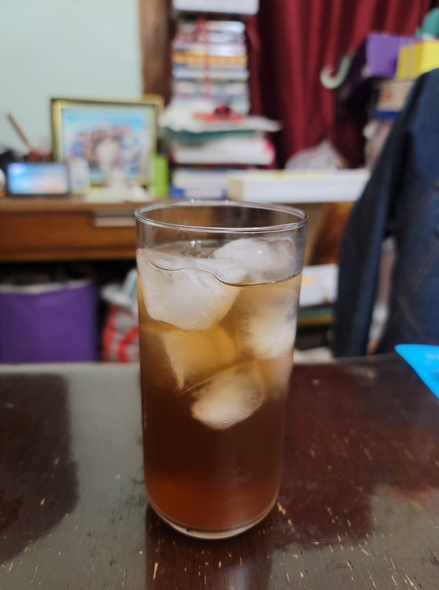

Lemon Balm Iced Tea

Ingredients:
- 1 cup Lemon balm, pounded
- 2 quarts Water or 1 quart Water + 1 quart Ice
- 1/3 cup Sugar or Honey
Instructions:
- Place 1 quart of the water into a pot and bring to a boil. Then remove the pot from the heat and add in the lemon balm. Cover and let steep for at least 10 minutes.
- Stir in the sugar or honey. Then stir in the ice or rest of the water. Let chill in the fridge and then serve cold over ice.